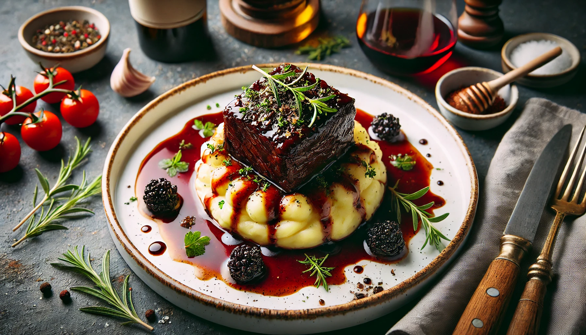

The Urban Table
Taste flavors you never knew existed...
Have a look at some of our special dishes, made by us!

Braised Short Rib with Truffle Mashed Potatoes
Click to view
>

Grilled Lamb Chops with Mint Chimichurri
Click to view

Herb-Crusted Salmon with Lemon Asparagus
Click to view

Pistachio-Crusted Chicken with Honey Mustard Glaze
Click to view

Signature Urban Burger
Click to view